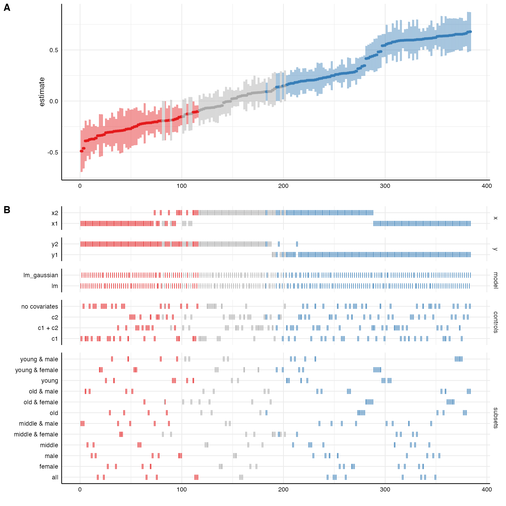

The following vignette is a more comprehensive version of the short
example on the homepage and exemplifies how to use the core functions of
this package. Although using specr strictly speaking does
not require any other package, we recommend to also load the
tidyverse as it provides valuable functions for data
wrangling and adapting outputs from specr functions.
Furthermore, the tidyverse includes ggplot2
which can be used to modify the layout of the plots.
Understanding the data
In order to understand what type of analytical choices exists and how they could affect a “multiverse” of results, you need to understand your data set. In a first step, you should hence investigate your data closely. For this example, we are going to use a simulated data set (included in specr).
# We have a look at the simulated data set that is included in the package
head(example_data)
#> # A tibble: 6 × 15
#> group1 group2 group3 x1 x2 x3 x4 c1 c2 c3
#> <chr> <chr> <chr> <dbl> <dbl> <dbl> <dbl> <dbl> <dbl> <dbl>
#> 1 middle female C 1.17 -0.363 -0.999 -0.293 0.736 0.171 0.244
#> 2 middle male B 0.765 0.0349 0.129 -0.155 -0.720 0.0165 -0.771
#> 3 old female A -2.33 -0.998 -1.11 -1.27 0.104 -2.90 -6.95
#> 4 old female B -0.507 -0.970 -0.0867 -0.978 1.79 -0.138 -0.431
#> 5 old male A -0.999 0.546 0.901 2.57 -0.245 2.02 2.83
#> 6 middle male A -0.177 -1.37 0.0947 -2.53 0.315 -0.688 -1.33
#> # … with 5 more variables: c4 <dbl>, y1 <dbl>, y2 <dbl>, y3 <dbl>, y4 <dbl>In this example, we assume that x represents independent
variables, y represents dependent variables, c
represents control variables, and group denotes potential
grouping variables that can be used for subsetting the data. Note that
these variables are characters. To use them as grouping
variables later, they need to be such character-variables. Numeric
variables will not work and need to be transformed beforehand.
Defining analytical choices
The next step involves setting up all specifications. This step
involves an in-depth understanding of the research question and the
model(s) that will be specified. In this case, we assume simply that
x should be positively correlated with y. We
use the function setup() to specify different analytical
decisions.
One type of analytical choice that could additionally affect the
results refers to the type of model that is estimated. The function runs
traditional linear regression models by default (i.e. when
model = "lm" is provided as argument). However, customized
model functions can be passed to the function, too. The only requirement
is that the customized function has formula and
data as argument names. The self-made function needs to be
a model estimation function, that takes the formula and estimates the
model based on the data.
Once we have specified all analytic decisions, we run the function
and save the results in the object specs. We can then use
the summary function to get a quick overview of the multiverse.
# specific model fitting function
lm_gaussian <- function(formula, data) {
glm(formula = formula,
data = data,
family = gaussian(link = "identity"))
}
# Specifying the analytic decisions
specs <- setup(data = example_data, # First, we provide the data set
y = c("y1"), # We choose only one dependent variale
x = c("x1", "x2"), # We are not sure which independent variable is better
model = c("lm", "lm_gaussian"), # We estimate two types of models
distinct(example_data, group1), # Subset 1
distinct(example_data, group2), # Subset 2
controls = c("c1", "c2")) # We include two control variable
# Overview of the specifications/multiverse
summary(specs)
#> Setup for the Specification Curve Analysis
#> -------------------------------------------
#> Class: specr.setup -- version: 0.3.0
#> Number of specifications: 192
#>
#> Specifications:
#>
#> Independent variable: x1, x2
#> Dependent variable: y1
#> Models: lm, lm_gaussian
#> Covariates: 1 (none), c1, c2, c1 + c2
#> Subsets analyses: middle & female, old & female, young & female, female, middle & male, old & male, young & male, male, middle, old, young, all
#>
#> Function used to extract parameters:
#>
#> function(x) broom::tidy(x, conf.int = TRUE)
#> <environment: 0x7ff4d50305a0>
#>
#>
#> Head of specifications table (first 6 rows):
#> # A tibble: 6 × 8
#> x y model controls subsets group1 group2 formula
#> <chr> <chr> <chr> <chr> <chr> <fct> <fct> <glue>
#> 1 x1 y1 lm 1 middle & female middle female y1 ~ x1 + 1
#> 2 x1 y1 lm 1 old & female old female y1 ~ x1 + 1
#> 3 x1 y1 lm 1 young & female young female y1 ~ x1 + 1
#> 4 x1 y1 lm 1 female NA female y1 ~ x1 + 1
#> 5 x1 y1 lm 1 middle & male middle male y1 ~ x1 + 1
#> 6 x1 y1 lm 1 old & male old male y1 ~ x1 + 1The resulting S3 class (“specr.setup”) includes a data frame with 96
different specifications. We can also see that the analysis will use the
function tidy() from the broom-package to
extract parameters from the models.
Fit models across specifications
The main function of the package is specr(). We simply
pass the specs-object created above and specify the number
of cores that should be use in evaluating all models. A good first check
is to use the summary() function to get an overview of
results.
# Run specification curve analysis
results <- specr(specs, workers = 1)
#> Models fitted based on 192 specifications
#> Cores used: 1
#> 2.69 sec elapsed
# Check
summary(results)
#> Results of the specification curve analysis
#> -------------------
#> Technical details:
#>
#> Class: specr.object -- version: 0.3.0
#> Cores used: 1
#> Duration of fitting process: 2.69 sec elapsed
#> Number of specifications: 192
#>
#> Descriptive summary of the specification curve:
#>
#> median mad min max q25 q75
#> 0.44 0.27 0.11 0.68 0.23 0.6
#>
#> Descriptive summary of sample sizes:
#>
#> median min max
#> 250 160 1000
#>
#> Head of the specification results (first 6 rows):
#>
#> # A tibble: 6 × 28
#> x y model controls subsets group1 group2 formula estimate std.error
#> <chr> <chr> <chr> <chr> <chr> <fct> <fct> <glue> <dbl> <dbl>
#> 1 x1 y1 lm 1 middle & … middle female y1 ~ x… 0.6 0.1
#> 2 x1 y1 lm 1 old & fem… old female y1 ~ x… 0.65 0.08
#> 3 x1 y1 lm 1 young & f… young female y1 ~ x… 0.48 0.08
#> 4 x1 y1 lm 1 female NA female y1 ~ x… 0.61 0.05
#> 5 x1 y1 lm 1 middle & … middle male y1 ~ x… 0.61 0.09
#> 6 x1 y1 lm 1 old & male old male y1 ~ x… 0.68 0.1
#> # … with 18 more variables: statistic <dbl>, p.value <dbl>, conf.low <dbl>,
#> # conf.high <dbl>, fit_r.squared <dbl>, fit_adj.r.squared <dbl>,
#> # fit_sigma <dbl>, fit_statistic <dbl>, fit_p.value <dbl>, fit_df <dbl>,
#> # fit_logLik <dbl>, fit_AIC <dbl>, fit_BIC <dbl>, fit_deviance <dbl>,
#> # fit_df.residual <dbl>, fit_nobs <dbl>, fit_null.deviance <dbl>,
#> # fit_df.null <dbl>The resulting S3 class (`specr.object”) includes relevant aspects of the specification curve analysis and a tibble that includes results for all specifications. We get a short descriptive summary of the specification curve, the sample sizes and an overview of the first 6 rows of the actual results.
Investigating the specification curve
To investigate the results, we can use some generic functions. The
simple summary() function has some additional functionality
that we can exploit here.
# basic descriptive summary of the entire specification curve
summary(results,
type = "curve")
#> # A tibble: 1 × 7
#> median mad min max q25 q75 obs
#> <dbl> <dbl> <dbl> <dbl> <dbl> <dbl> <dbl>
#> 1 0.442 0.267 0.107 0.678 0.230 0.604 250
# basic descriptive summary per specific choices
summary(results,
type = "curve",
x, controls) # group analysis by choices
#> # A tibble: 8 × 9
#> # Groups: x [2]
#> x controls median mad min max q25 q75 obs
#> <chr> <chr> <dbl> <dbl> <dbl> <dbl> <dbl> <dbl> <dbl>
#> 1 x1 1 0.617 0.0347 0.484 0.678 0.605 0.648 250
#> 2 x1 c1 0.601 0.0345 0.452 0.653 0.594 0.637 250
#> 3 x1 c1 + c2 0.591 0.0559 0.446 0.653 0.574 0.633 250
#> 4 x1 c2 0.606 0.0482 0.480 0.675 0.592 0.645 250
#> 5 x2 1 0.266 0.0712 0.149 0.415 0.207 0.285 250
#> 6 x2 c1 0.226 0.0665 0.121 0.420 0.178 0.270 250
#> 7 x2 c1 + c2 0.209 0.0632 0.107 0.438 0.169 0.243 250
#> 8 x2 c2 0.243 0.0633 0.139 0.432 0.196 0.276 250
# basic descriptive summary with other statistics
summary(results,
type = "curve",
subsets,
stats = list(mean = mean, median = median))
#> # A tibble: 12 × 4
#> subsets mean median obs
#> <chr> <dbl> <dbl> <dbl>
#> 1 all 0.430 0.432 1000
#> 2 female 0.437 0.437 500
#> 3 male 0.424 0.428 500
#> 4 middle 0.400 0.404 331
#> 5 middle & female 0.362 0.368 168
#> 6 middle & male 0.422 0.424 163
#> 7 old 0.489 0.489 323
#> 8 old & female 0.534 0.538 163
#> 9 old & male 0.452 0.457 160
#> 10 young 0.368 0.372 346
#> 11 young & female 0.316 0.320 169
#> 12 young & male 0.421 0.430 177The output contains summary statistics such as the median, the median absolute deviation, … as well as the number of observations that were used for each model. Bear in mind that due to subsetting or missing data, sample sizes can vary considerably which, in turn, affects the results.
Visualizing results
However, in order to grasp how the different analytical choices
affect the outcome of interest (in this case, the estimate refers to the
unstandardized regression coefficient b), it is reasonable to
plot a specification curve. The generic function plot() can
be used to produce the typical visualization of the specification curve
and how the analytical choices affected the obtained results.
# Plot entire visualization
plot(results)
# Plot
plot(results, type = "curve", desc = TRUE) +
ggplot2::scale_color_brewer(palette = "Dark2") +
ggplot2::theme_grey() +
ggplot2::theme(legend.position = "none")
The resulting plot includes the ranked specification curve (A) and an overview about how the different analytical choices affect the estimate of interest (B). Red represents negative and significant effects (based on the chosen significance level, by default \(\alpha = .05\)). Blue represents positive and significant effects. Grey refers to non-significant effects.
Sometimes, it can be useful to check the influence of specific
choices on the estimate of interest more precisely. We can again use the
generic function plot() to produce respective boxplots.
plot(results, type = "boxplot")
We can see that the dependent variable (y) produces the
largest differences in the obtained estimates.
Decomposing the variance in the specification curve
Finally, we can estimate how much variance in the specification curve
is related to which analytical decisions. We again can simply use the
plot() function with the argument
type = "variance" and receive a barplot that shows which
analytical choice accounts for which amount of variance in the
curve.
plot(results, type = "variance")
#> grp vcov icc percent
#> 1 subsets 0.00 0.05 4.65
#> 2 controls 0.00 0.00 0.27
#> 3 model 0.00 0.00 0.00
#> 4 x 0.06 0.93 93.13
#> 5 Residual 0.00 0.02 1.94